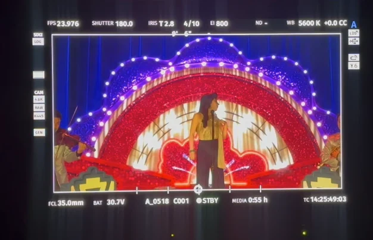

작품에 사용할 세 가지 무대 중 하나를 처음부터 제작하고 나머지 두 무대에는 빛이 흐르는 라이트 효과를 머티리얼로 만들었다.
1. 무대 환경 제작
팀에서 제안한 무대 레퍼런스를 바탕으로 담당 무대를 처음부터 제작했다.


2. 라이트 머티리얼 제작
다른 두 무대에 사용할 라이트 효과를 머티리얼로 만들고 빛이 흐르는 방향과 패턴을 0~1 범위의 파라미터로 조절하도록 구성했다. 속도와 방향, 켜지는 전등 사이의 간격, 한 번에 흐르는 전등 수를 바꿀 수 있다.
3. 렌더링과 촬영 적용
제작한 무대 환경과 라이트 효과를 영상으로 렌더링해 촬영 현장의 LED에 사용했다.

